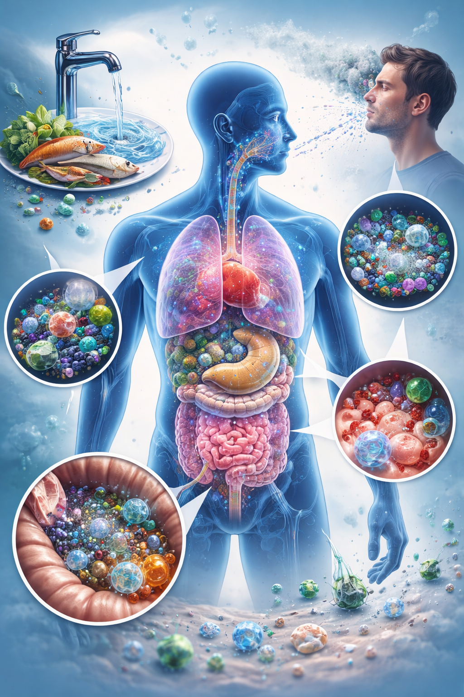

Most people are exposed to microplastics (MPs) every day without even thinking about it. These tiny particles are no longer only found in the environment, but have also been detected inside the human body. Plastic pollution is no longer just an environmental issue, but may also directly affect human health.
Humans are exposed to MPs through several pathways, mainly through food, drinking water and air. This means that exposure is not occasional, but continuous and part of everyday life.
Once inside the body, MPs have been detected in different tissues, including blood, lungs, placenta and reproductive organs. Some studies also suggest that smaller particles, especially nanoplastics (NPs), may be able to pass protective barriers in the body, such as the blood-brain barrier.
At the cellular level, one of the main ways microplastics may affect the body is through oxidative stress. This happens when harmful molecules build up faster than the body can break them down. Over time, this can lead to inflammation, cell damage, and disruption of normal cell function.
MPs may also affect the body's hormonal system. Plastic particles can contain or carry chemicals such as bisphenols and phthalates, which can interfere with hormone signaling. These chemicals can «trick» the body by mimicking or blocking hormones, which may affect metabolism, reproduction and development.
Another important aspect is that MPs can act as carriers of harmful substances. Because of their large surface area, they can attach to harmful substances such as heavy metals and pollutants. This is often referred to as a “Trojan horse” effect, where MPs transport these substances into the body.
Particle size also plays an important role. Smaller particles can more easily interact with cells and tissues in the body. NPs are therefore considered more biologically active and may have a greater potential impact.
Studies in animals have shown that MPs exposure can be associated with inflammation, immune responses, reproductive changes and metabolic disturbances. For example, some studies have found reduced sperm quality and hormonal changes. MPs have also been detected in human reproductive tissues, such as semen and testicular tissue, although the direct health effects in humans are still not fully understood.
Emerging research suggests that MPs may accumulate in different organs and potentially affect neurological processes. Possible explanations include inflammation, stress inside cells and interactions with harmful chemicals. However, evidence in humans is still limited.
Overall, there is increasing evidence that MPs can interact with biological systems in several ways. At the same time, much of the research is still based on laboratory and animal studies, and we do not yet fully understand the long-term effects in humans.
While the effects of MPs in the body are still being studied, MPs have been detected in the human body and may interact with important biological systems. This raises questions about the potential effects of long-term exposure, including during pregnancy.
Reducing plastic use in everyday life does not require drastic changes, but small choices over time may help limit potential risks as research continues.